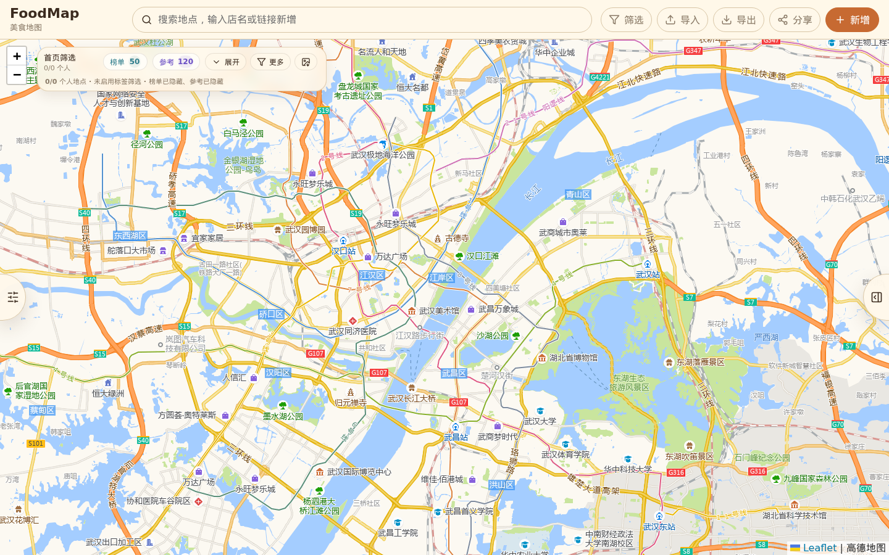
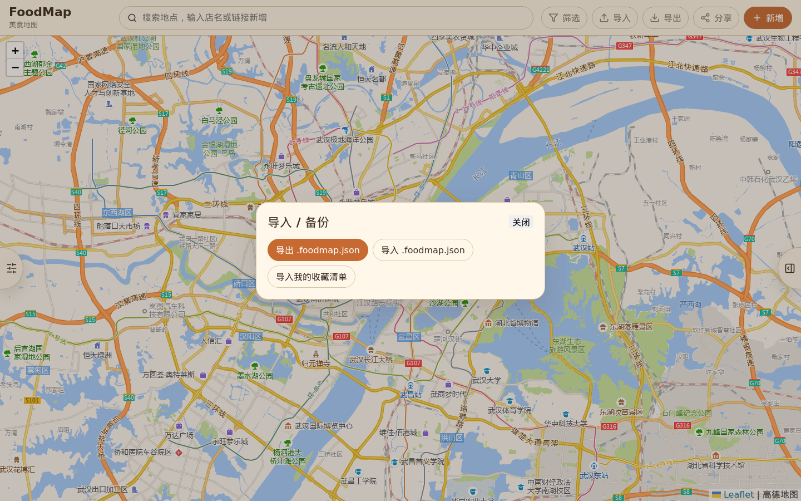
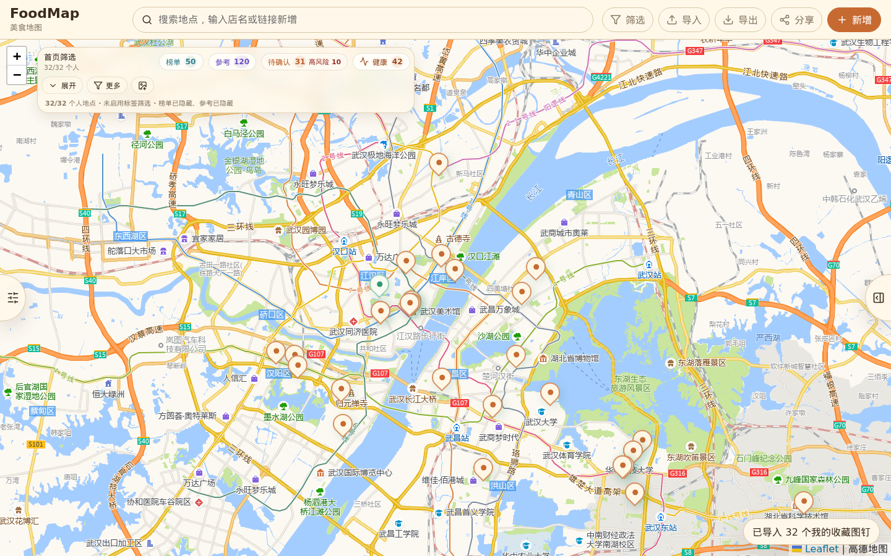
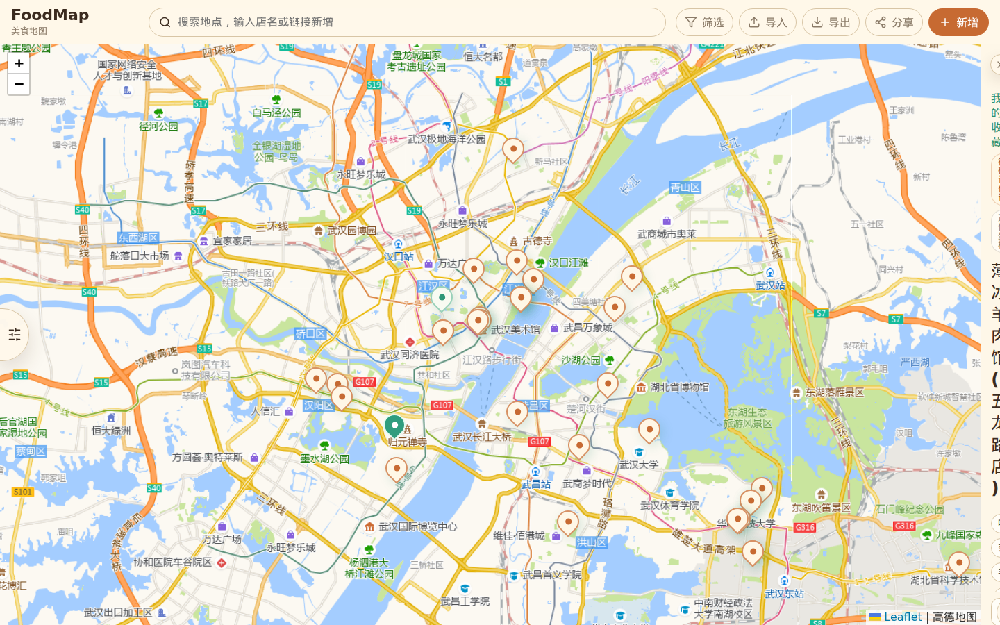
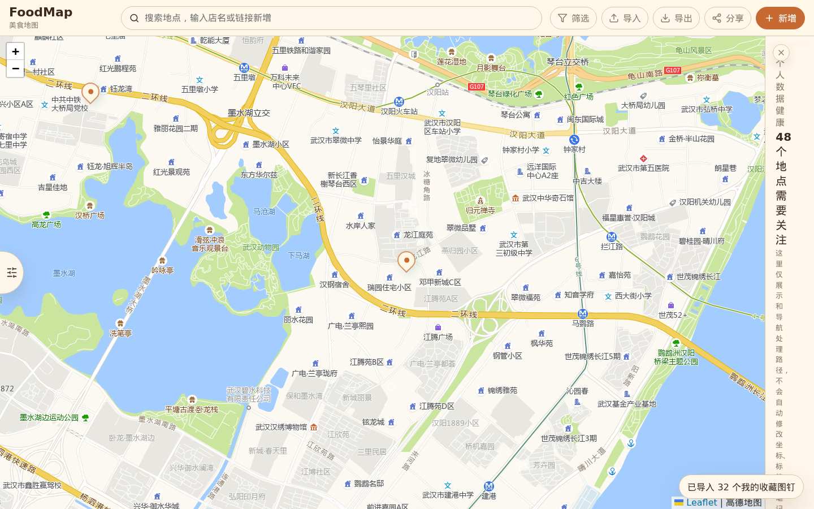
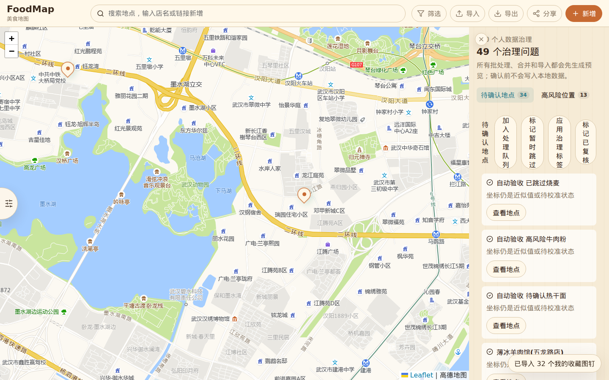
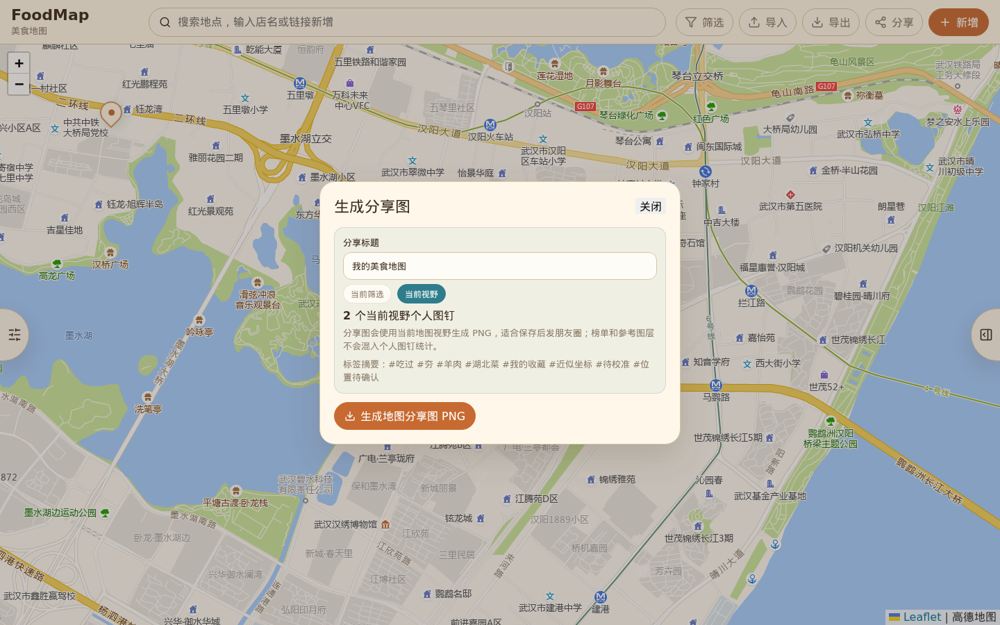
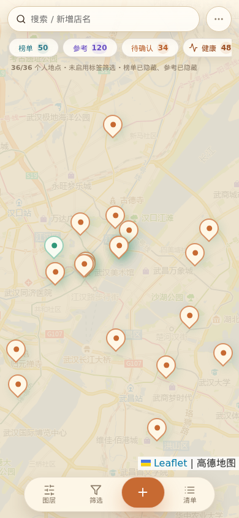

FoodMap 自动化验收报告
通过生产构建
44/44Domain 单元测试
50 条真实扫街榜基线
9 张浏览器截图证据
结论
本轮自动化验收结论：P18/P19/P20-C 相关已实现主路径在当时环境下可运行，构建、单元测试、真实扫街榜校验和本轮 headless 浏览器截图路径通过。
历史边界：本报告当时未覆盖 P21 最终验收；后续 P21 targeted E2E、分享快照发布摘要、导入包校验、无效导入 no-op 证据和只读分享越权控件检查已由 P21 final acceptance 及后续全量报告补齐。
目标架构与当前实现
| 维度 | 目标架构 | 当前实现状态 |
|---|---|---|
| 产品边界 | 纯前端、本地优先、无账号、无后端、无云同步、无公网永久分享链接。 | React + Vite 单页应用；用户数据保存在浏览器 IndexedDB；分享和导入导出仍是本地能力。 |
| 核心路由 | #/map 作为个人美食地图工作台；#/share/:snapshotId 作为本地只读分享页。 |
历史记录：当时工作台、导入导出、地图、详情、数据健康、治理工作台、分享缺失页可达；只读分享完整 P21 出门证据不属于本报告覆盖范围。 |
| 数据层 | 地点、图层、照片、快照、治理历史通过 Repository/Domain 收口，写入前有显式确认和校验。 | src/domain 与 src/persistence 已承载地点状态、海报、治理、IndexedDB repository 等能力；P21 导入包 schema 与 no-op 证明属于后续验收范围。 |
| 体验层 | 地图优先；用户可记录、筛选、修正、治理、生成分享图、导入导出本地数据。 | 本轮截图证明工作台、导入个人收藏、详情、数据健康、治理、当前视野分享图和移动端主路径可渲染和可操作。 |
| Agent 边界 | Agent 只能读数据、提交候选或解释错误，不能绕过用户确认固化坐标、删除、合并或伪造公网分享。 | 现有 window.FoodMapAgentBridge 支撑受控自动化和候选/数据操作；越权负例仍应作为阶段回归继续保留。 |
自动化命令结果
| 命令 | 结果 | 关键输出 |
|---|---|---|
npm run build |
通过 | TypeScript build 与 Vite production build 成功，1650 modules transformed。 |
npm test -- --run |
通过 | src/tests/domain.test.ts：44 tests passed。 |
npm run verify:scanlist |
通过 | 真实扫街榜 baseline 通过：50 entries、50 manual verification overlays、38 approximate admitted pins。 |
| Headless Chromium 用户路径截图 | 通过 | 生成 9 张 PNG 和 manifest.json，证据目录约 6.1MB。 |
| P21 targeted Playwright | 历史未覆盖 | 本报告生成时未将 P21 宣布验收；该缺口由后续 P21 final acceptance 和全量自动化验收报告补齐。 |
用户场景截图证据
以下截图来自本轮 headless Chromium 自动化访问 http://127.0.0.1:5174。导入个人收藏使用项目内置验收数据，并额外写入 4 条自动验收样例用于覆盖数据健康分组显示。
{kind=link}

{kind=link}

{kind=link}

{kind=link}

{kind=link}

{kind=link}

{kind=link}

{kind=link}
{kind=link}

不通过项与风险
| 风险 | 当前判断 | 后续动作 |
|---|---|---|
| P21 targeted E2E 当时未覆盖 | 历史阻塞项 | 后续补充本地分享可携带、导入失败 no-op、只读分享越权控件等专项 Playwright 测试。 |
| 分享快照发布摘要未完整证明 | 实现/证据不足 | 生成快照前后需展示并测试标题、地点数、图层数、缩略图数、生成时间和本地只读说明。 |
| 导入包校验深度不足 | 实现/证据不足 | 补 schema/version、snapshot metadata、places/layers/photos、缩略图异常和 unsupported schema 校验。 |
| 无效导入 no-op 未被本历史报告证明 | 证据不足 | 用 IndexedDB diff 证明失败导入不写入地点、图层、照片、快照和治理历史。 |
| 数据 schema 文档与代码版本表述需区分 | 文档风险 | 区分导出包 schema version 与 IndexedDB DB_VERSION = 2，避免审计误判。 |
验收边界
- 本历史报告证明当时代码在本机 headless Chromium 下可完成列出的真实用户路径截图，不等同于后续完整 P21 出门验收。
- 本轮自动化没有使用外部实时 POI 服务，也没有宣称无 Key 条件下具备外部实时搜索能力。
- 本轮截图脚本通过受控 Agent Bridge 写入 4 条自动验收样例，只用于覆盖健康分组展示；报告没有把这些样例伪装成线上真实店铺。
- P21 当前状态以
docs/active/p21-final-acceptance-report.md和后续全量自动化验收报告为准。